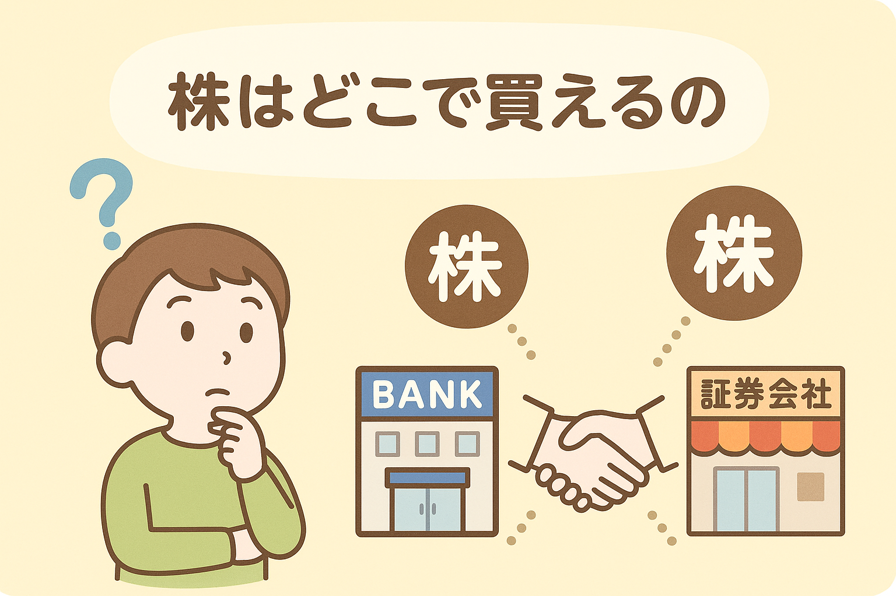
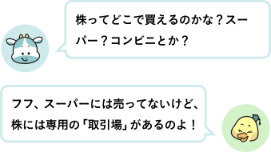
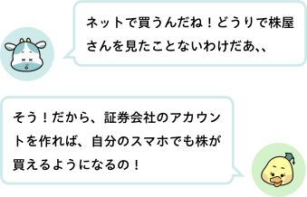
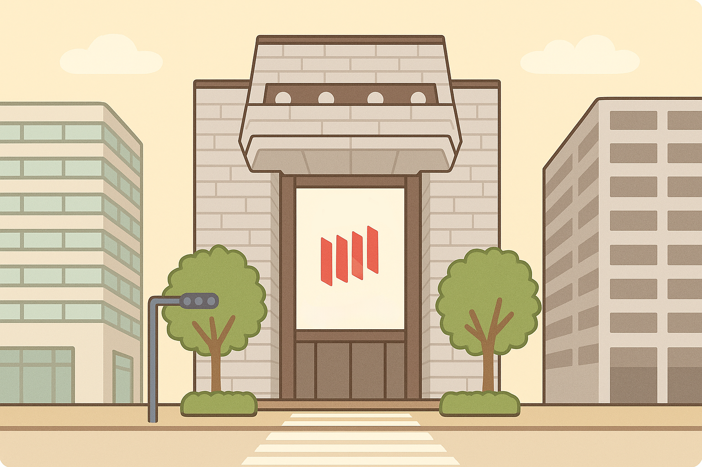
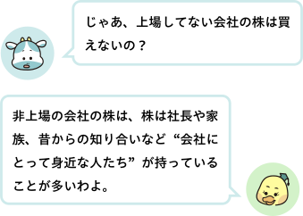
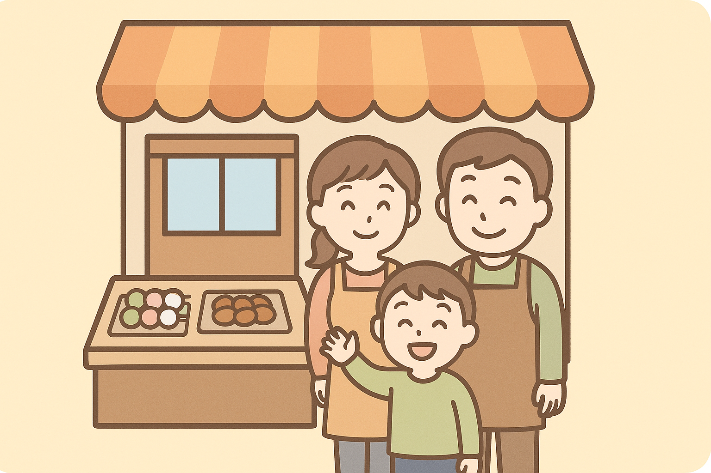
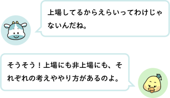

● 株は「証券取引所」で売り買いされている
証券取引所は、会社が自分の株を公開して、たくさんの人に買ってもらえるようにする場所です。
日本では「東京証券取引所」が一番有名です。
でも、実はそこに直接行って株を買うわけではありません。
● 株はどうやって買うの？
株を買うには、「証券会社」というサービスを通じて、スマホやパソコンでネットから買うのが今の普通の方法です。

● 証券取引所で全ての会社の株が買える？

証券取引所で、全ての会社の株が買えるわけではありません。
証券取引所に株を出している会社のことを、「上場（じょうじょう）企業」といい、私たちは上場企業の株を買うことができるのです。
上場するには、いくつかの条件があります。
・あるていど大きな会社であること
・ 毎年の売上や利益が安定していること
・ 会社の情報を正しく公開していること
これらをクリアすると、はじめて上場できるのです。
● 上場していない会社は？
一方で、上場していない会社もたくさんあります。
これを「非上場（ひじょうじょう）企業」といいます。
実は、日本にある会社の約99％は非上場です。
みなさんが知っているような大きな企業は上場していることが多いですが、地元の工場やお店、家族でやっている会社のほとんどは、非上場のまま経営をしています。

● なぜ上場しない会社もあるの？

たとえば、あるお菓子屋さんが「自分たちのペースで、家族と協力してやっていきたい」と考えたとします。
もし上場すると、たくさんの人の目を気にして、毎年もっともっと利益を出さなきゃ…とプレッシャーが大きくなってしまうかもしれません。
そんなふうに、自分たちのやり方を大事にしたいから、小さな会社だけでなく、大きな会社も、「あえて上場しない」という場合があるのです。
